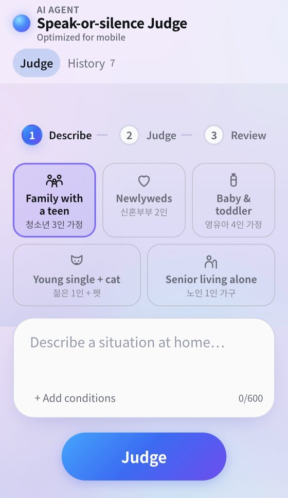

에이전트가 '말할까, 말까'를 판정하는 엔진. 가정 페르소나와 집 안 상황을 넣으면 20여 개 UX 룰에 근거해 무엇을·어느 기기로·누구에게·언제 할지 판정합니다. 테스트를 통해 기존 룰의 보완점과 새로운 시나리오를 개발할 수 있어요.
100일 에이전트는 '언제 말하고 언제 침묵할지'를 100일간 직접 써본 기록이에요. 109번 고민해서 먼저 말을 건 건 25번뿐. 그런데 각 판단이 맞았는지 하나씩 채점해보니 이상한 게 드러났어요 — 에이전트가 판단마다 매긴 '내가 얼마나 확신하는지' 점수(0~100)가, 맞았을 때나 틀렸을 때나 거의 똑같았던 거예요. 쉽게 말해, 자기가 언제 틀렸는지 스스로 전혀 몰랐다는 뜻이죠.

실제 테스트 해본 케이스를 보면, 하나의 시나리오에 대해 단순히 '알릴까 말까'가 아닌 좀 더 구체적인 판정을 해줘요 (Action · Channel · To · Timing). 각 판정엔 발동한 룰과 '무엇이 바뀌면 뒤집히는지'가 붙고요.
토요일 오후 3시, 엄마가 기기에서 시작한 콤보 세탁건조기의 세탁이 끝난 지 30분이 지났다. 엄마는 거실에서 TV로 드라마를 보고 있고 빨래는 아직 꺼내지 않았다. 아빠는 집 밖에서 장을 보고 있고 아들은 친구들과 놀러 나갔다.
R20 중요 이슈: 세탁 종료 후 30분이 지나도록 세탁기 문을 열지 않았다(기기 상태). 기기가 스스로 해결할 수 없고 방치할수록 젖은 빨래 손실이 커지므로 중요 이슈다. R20은 활동 중인 스크린에 띄우라고 하며, 엄마가 TV를 보고 있어 TV에 낸다. 알림 설정 상태는 입력으로 확인했다. R9의 묶음 대상이 아니다(R20은 묶지 않는다). 작업 시작이 '기기에서 직접 조작'이라 시작한 사람을 확정할 수 없다. 그래서 R16에 따라 등록 사용자인 부부 모두의 폰에 낸다. 둘 다 앱 알림이 켜져 있어 R18에 걸리지 않는다. 아들은 폰을 등록하지 않았고 집 밖이라 폰 알림 대상이 아니다. 아들의 앱 알림 꺼짐은 이 판정에 영향이 없다. 방해금지는 꺼져 있다. 입력 부족: 냉장고 화면이 켜져 있는지 알 수 없어 냉장고 화면은 채널에서 뺐다. 이후 세탁기 문을 열었다 닫을 때까지 30분 간격으로 다시 알린다.
세탁기 문을 열었다 닫은 것이 기기 상태로 확인되면 R14에 따라 낸 알림을 모든 채널에서 거두고 다시 알리지 않는다(행동은 알림 거두기). 세탁 종료 후 경과가 30분 미만이었다면 중요 이슈가 아니어서 알림이 없다. 엄마가 앱 알림을 꺼 둔 상태였다면 엄마 폰에는 알림이 가지 않는다. 냉장고 화면이 켜져 있다고 입력되면 냉장고 화면도 채널에 들어간다.
판정 결과 룰이 충돌하거나 판정 결과에 이견이 있다면 Review에서 룰 개정 또는 추가가 가능해요. 100일 에이전트에서는 AI의 판단이 불투명했고 프롬프트가 일찍 고정돼, 과묵이라는 편향이 끝까지 해결되지 않았어요. 이번 프로젝트에서는 판단이 버전 있는 룰셋으로 드러나 있고, 새 엣지 케이스가 나올 때마다 룰이 쌓이죠. 감사 및 개정 가능하고, 충돌을 검사하고, 되돌릴 수 있는 시나리오 검증 툴이 되었어요.
툴은 실제로 동작하고, Claude(Sonnet 5.5) 기반이에요. 모델로 판정하기 때문에, 열어보려면 본인 Anthropic API 키가 필요합니다.
개인 프로젝트이며, 삼성의 공식 입장이나 실제 빅스비 동작이 아닙니다. 시나리오 속 기기 기능은 가정(假定)입니다.